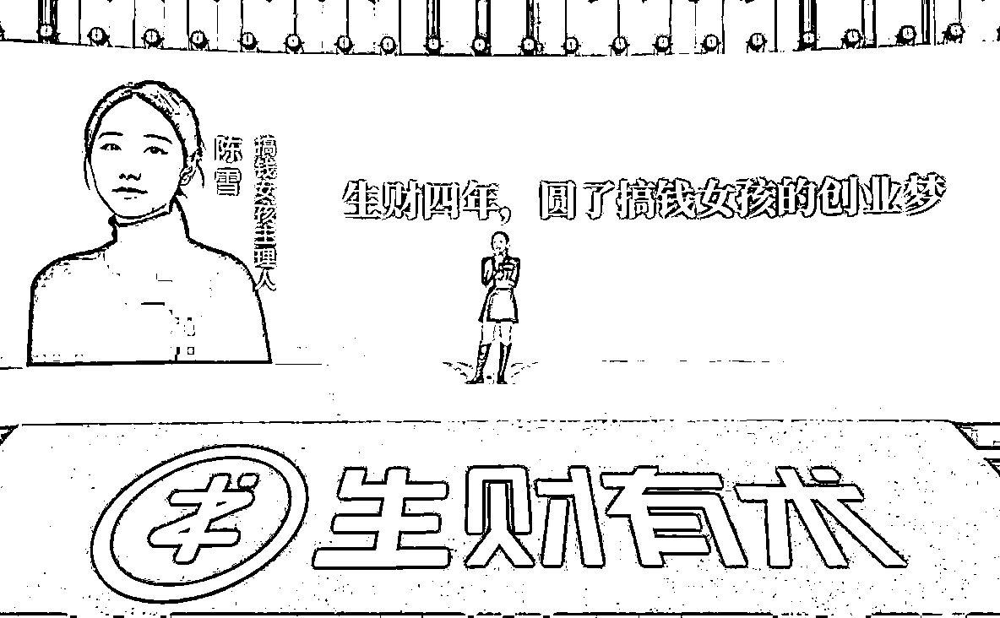
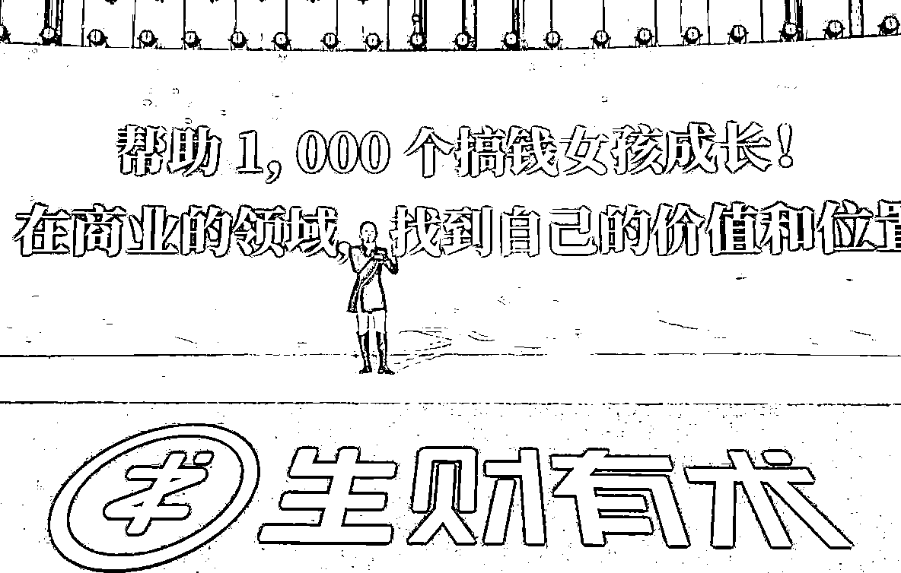
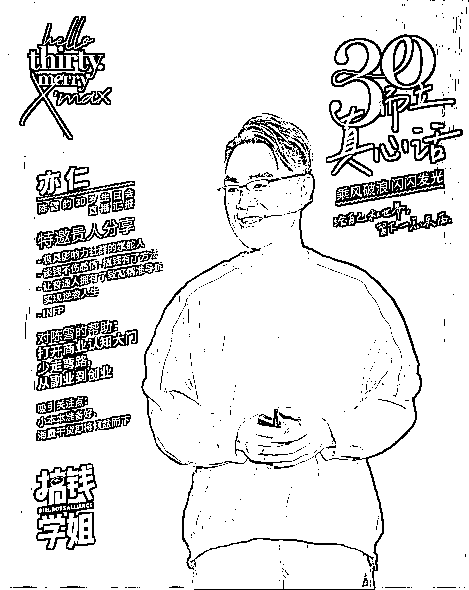
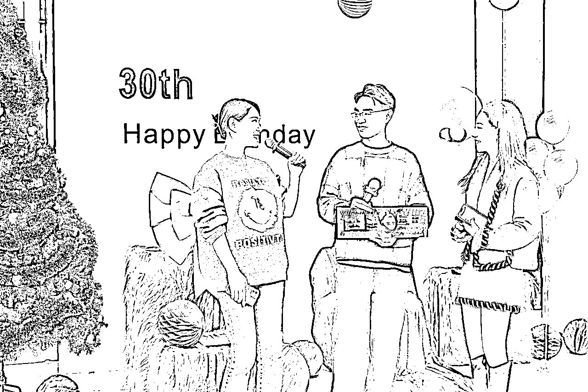
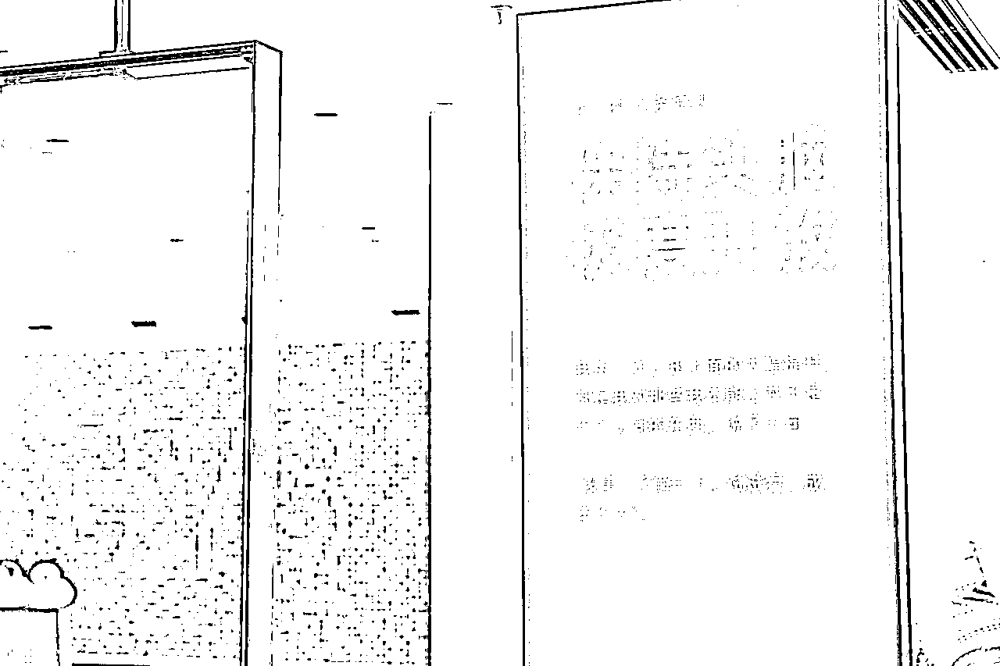
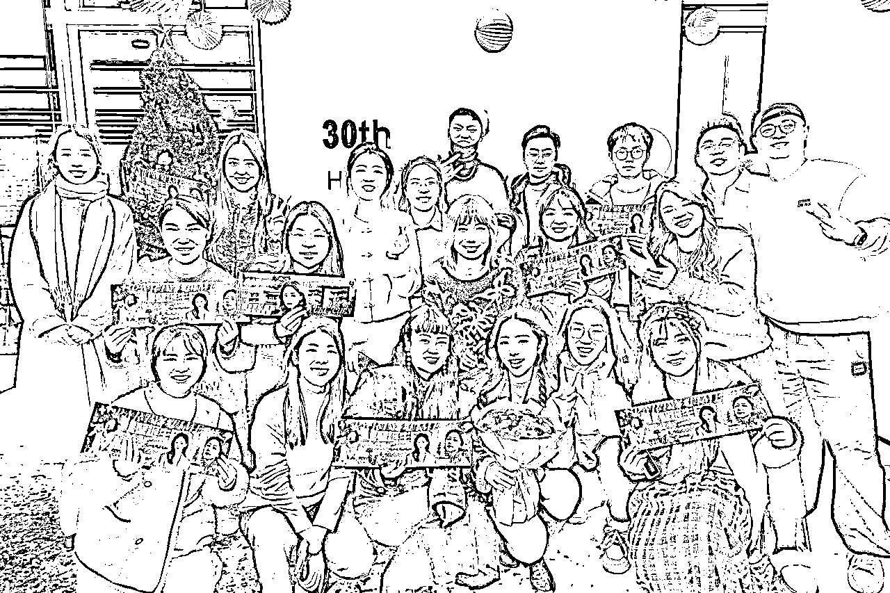
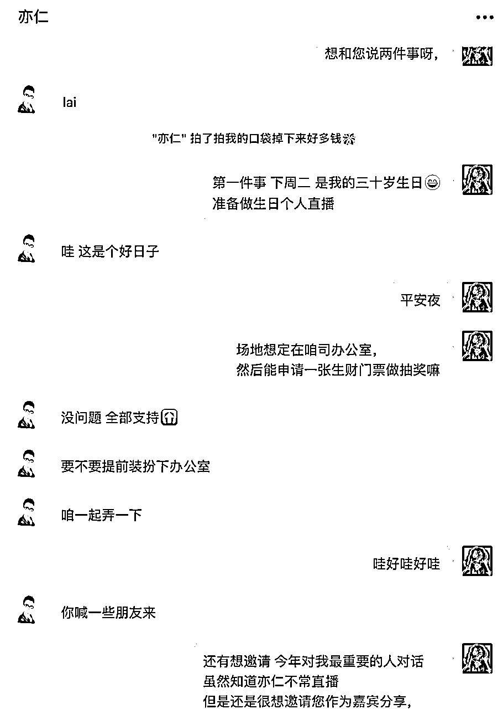

来源：https://pcuddnfsui.feishu.cn/docx/HxBWdbw8Yowwgjxr0JUcJ8dtn0b
关键词：c 生财 分享 特质 观点 机会 圈子 生态 世界 定位 勇气 视野 年轻人 投资 印象 主义 商业定位 商业价值


大家好，我是生财有术四年圈友陈雪，也是「你好航海家」主持人，播客「搞钱学姐」的主播。
在遇到生财有术之前，我一直认为搞副业的方法只有一条路，就是做自媒体做博主，但是我没有在这条事情上赚到钱。而在加入生财有术之后，我见了非常多赚钱的案例，打开了对搞钱的全新思路。
中间也时常迷茫，焦虑，沮丧。虽然自己很菜，平凡普通，但我内心一直有信念，只要不掉队，我一定能找到很好的机会，实现理想的自我和金钱的自由。22年我还搬家来了杭州，因为我觉得当你不知道做什么的时候，就在这里待着，紧跟着生财有术，一定会找到机会的。
我花了四年的时间在这里成长，今年3月的千人航海家大会，也成为唯一一个女性的分享嘉宾。并且去年一年，累积邀请了 超过1000位用户付费加入生财，让更多女生和我一样的女生，打开搞钱的眼光，找到了自己的赚钱机会和方法。
在这周二平安夜，是我的30岁生日开启了一场直播，我邀请亦仁作为嘉宾。
一共问了亦仁10个问题，特整理出了文字稿，全文超7000字，分享给圈友一起学习。

亦仁 ：
我觉得人会一直犯错的，包括我自己，就是这么一路犯错走过来的。所以如果我回到 30 岁，我可能不会告别自己就是少犯错误，我觉得犯错没问题。但我可能会给自己做几个提醒：
第一个：我要努力的去加入一个比我整体更厉害的圈子。
我觉得这个是非常非常重要的。因为圈子代表的视野、代表的信息的密度，代表的认知，代表的格局，人其实是很多，很多时候其实是很难靠自己左脚蹬右脚去成长起来的，直到你把自己放到一个环境里面，这个环境会潜意默的会影响你。所以我肯定会让自己尽自己所能，加到一个我觉得平均水平都超过我的圈子。。
第二个：我不会让自己少犯错，我会让自己大量的犯错，只是我要控制好自己的犯错成本。
我不要一次犯错，比如让自己身体就不行了，对吧？或者把自己的资金全亏没了，或者说就是我把自己的人脉搞得很差，对吧？我觉得这个肯定是不行的，本质上觉得这个世界就是在不断的犯错中找到一些解法，所以大大犯错，但是控制好成本。
第三个：我只保留极少的观点，但是我会为我的观点下重注。
我要持有少的观点，我不是要有很多观点，我也不是要有很多认知。就是我看准的事情，我要坚定地投入地去做，拿到结果，对吧？我不是可能这边做一点，那边做一点，然后我很分散，我只有几件事情，甚至我最重要的事情只有一件，但是为这件事情我 all in 进去，拿到最大的结果。
第四个：要学习更多的感恩。
感恩你的用户，感恩你的贵人，感恩你的这个就是团队伙伴，确实感恩他们在默默之中做出了很多事情，正是因为有他们，我们才会往前走得更快一点。很多时候我们是前台的明星，但是背后其实有很多幕后的人在帮我们。
最后一点：把自己的健康更重视。
因为我们其实是在玩一个无限游戏，而无限游戏里面最重要的约束条件其实就是我们的健康，我们能玩多久？我们能持续的取得多大结果，你的健康是不可逆的，其他都是可以再去争取到的。所以就是这是我回到 7 年前或者 10 年前我对自己的提醒嘛？在这些条件下，那我就大胆去玩，人生不就是一场体验，那不管是好的还是坏的，你体验就是一场收获。
（亦仁越来越帅，越来越逆生长了！一定能活到150）
陈雪：
第一个提醒不要怕犯错。其实我们总是想要那个坑在那，我们绕过去，去少避坑，包括我有的时候犯错了我会很难面对，想看到亦仁我就想躲远一点，不敢跟他说。所以以后捅娄子了也大胆一点，不要怕犯错，大胆跟老板说。
然后第二个就是我觉得还有一个非常有价值的，就是要工作到老，工作到死。这个话虽然觉得好像有一点残酷，但是我现在最近听到梁宁老师说了一句话，就是我们建立自己能够活到 120 岁的这个概念。
亦仁 ：
已经基于我能活到 150 岁开始规划很多事情了，哈哈哈，真的。
就是我们这代人可能真的有很大机会活到 150 岁，所以在这个时候你的很多规划要重新调整。我们以前都是觉得我们能活到八九十就很好了，但是随着 AI 的进一步发展，我们都有很大概率活到 150 岁。
活到150 岁，人到中年是什么时候呀？到 80 岁你才是中年的。所以千万不要在 30 岁、 40 岁的时候觉得自己好像已经中年了，该退休了。还早。
陈雪：
我之前老给自己执念，就是我要在 38 岁的时候退休，我认为自己可能到 60 岁就差不多了，不管我的健康值、美丽值、运动值都会到达差不多的一个状态，所以这个事情就会导致你做事情很急，总想要拿到很结果，拿到一个结果之后你就想躺平或者结束，但事实上不会的。
你会要想象你会活到 120 岁这件事情，然后你做的所有事情都在接下来的时间里会如约而至。然后你所有想实现的事情都有机会。
亦仁 ：
我觉得就是这个时代让我们很多人很焦虑，但是我觉得人生虽然是一场体验，你的焦虑、你的崩溃、你的很多不好的状态都是我们体验的一种。
就像刚才超哥讲的叫接纳自己的一切，它都是这个生命给予你的一个保障，你从你的这个很多经历里面你能挖掘出特别价值的东西，我们所有的经历都会在某一个点连在一起，然后让你感觉这是上天给你最好的礼物。这句话送给大家。
亦仁 ：
其实我是一个在大学的时候就是一个拼命搞钱的人，因为我家庭条件不好，所以我特别想赚钱，所以我非常的理解现在生财有术很多圈友的这种状态，但是我没有一个圈子，所以我就疯狂的在网上找各种方法，会疯狂的去搜索，疯狂的去挖掘，疯狂的去跟别人去聊。
所以慢慢的，慢慢的，我就形成了一种找项目的天赋或者能力，就是我可以，从众多的信息里面我判断出来什么是能赚钱的。这个其实是我的天赋，核心能力，所以基于这个，我慢慢的做项目，我赚到钱了，然后我有越来越好的生活，我对自己越来越自信，所以我觉得这个东西是拯救了我。
所以我在 17 年的时候我说，要不把这个东西给大家分享出来，我觉得就是拯救的我，我要把它分享出来，它一定可以拯救很多跟我一样的人。所以拯救我我们就拿出来拯救别人，这就是我的一个很重要的一个心路。

亦仁 ：
我自己其实是觉得我会比较欣赏什么样的年轻人？就是我觉得第一个觉得是我特别欣赏开放度很高的人。
这个开放度高是指它其实是自己的这个内心的 EGO 是比较低的，他愿意去听别人在说什么，真正的对方给你存在的意思，能去理解他背后的意图，理解他真正在说什么，甚至他会回去再去深入的研究。我见过的很多厉害的人，其实都是开放度非常非常的高，面对不管是正反馈还是负反馈，都能从中吸收很多对自己有用的东西。这是第一个。
第二个我觉得是他能够为自己的这个观点去下注。
其实这个世界根本不缺观点啊。其实就是我比如说贵人给他讲了一些东西，对，他会，哎觉得理解了，但是然后就站在更长的周期去考虑问题的人。对，其实是如果说能够站在更长期的角度去考虑。
第三个我觉得就是比较长期主义思维的人。
就是他能够不会被短期的眼前的利益所影响。他能够真正的觉得什么东西是重要的，愿意牺牲自己的短期的一些利益，去换取更长期的一些价值。我觉得这个也是我比较欣赏的。
第四个我觉得：懂得感恩吧。
其实我觉得懂得感恩的人其实没有那么多，然后很多人在自己成功之后，他会觉得而且是我自己的本事，我自己的能力，但是其实有很多贵人，包括我们的不仅仅是可能帮助过他的人，还有他的用户，员工对吧。
其实可能都是在默默的帮助他，那这个过程中如果说他觉得自己的功劳，那他一定会被反噬。对，所以我觉得一个人他能够不断的去感恩，回馈那些曾经帮助过自己的人，我相信他的发展会越来越好。
亦仁 ：
嗯，我觉得其实是现在就是有 AI 的这个帮助，其实我们能听懂任何东西。
就实际上就是大多数，比如就是两个人聊可能会存在一些东西，我们没有立刻的同频，但是如果你回去找AI 聊一聊就立刻能理解。所以我不认为这里面真正的听不懂，而是其实你这个背后，我认为真正的其实是我们自己会存在一些EGO。
我会觉得，唉，我听不懂，我好像很差，我会觉得这个大佬觉得我这个都听不懂，会不会我觉得我很挫，我觉得这个事在背后在作祟，所以就是如果说把这个心态给它克服掉。就是听不懂我就问嘛。

你能来展开讲一讲，我其实是非常乐意的，因为我们都知道其实我们每个人都经历过这样的阶段，有些东西听不懂，然后我想问，然后我想去了解，就是我觉得贵人是很愿意去帮助他的。所以还是我回到我刚才聊的叫开放度，就你要打开自己，那些说的跟你不一样的观点和意见，往往是特别有价值的。
因为我最近在学习投资，所以我加过了一些投资群。然后这里面的大佬说的话我听不懂，每一个我听不懂的我都特别开心，每一个我听不懂，我都觉得是我的一次成长和学习机会，我就会拿来我听不懂的，然后我去 AI 问， AI 每次都给我讲得特别明白。
对，所以我不觉得听不懂， AI 讲得比大佬讲得还明白。所以每一次这样的机会就是我就快速地学习。
所以我觉得不是听不懂，而是我们内心是不是真的希望自己懂，这是最关键的。
陈雪：
是不是真的希望去拿到这个机会，然后让自己懂。
亦仁 ：
我觉得第一个印象是叫接地气。
我们第一个印象是一个黄牛党的陈雪，我觉得这是一个很接地气的身份。
第二个我的印象其实是我觉得是有质感，这是两个很冲突的一个词。对，但是他就是很不违和的在你身上出现了。对，既接地气，有很多野路子的一些操作，但是同时我在你身上，我觉得不仅是这种内容的质感，视觉的质感，我觉得就是非常非常不错的。
我觉得第三个词我觉得是有勇气。对，其实我刚刚在台阶上听你分享，我其实能听到就是你做了很多决策，走出自己的舒适区，这背后其实我理解是非常非常需要勇气的。对，我觉得这个其实是很少有人能做到，能不断地去突出，突破自己的输出区，所以我觉得有勇气也是我对你的一个很重要的印象。对，所以，嗯，就是我觉得你现在就是在做的事情其实也是非常棒的。
如果说你的变化，我觉得其实是你的一个叫定位的变化，从一个自己是一个搞钱女孩，到现在想带着1000个女生去搞钱，我觉得这个身份的变化背后可能就是你可能慢慢的在找到自己的使命，找到自己的愿景，我觉得这是非常棒的。
陈雪 ：
新爱搞钱的女孩三大特质出现了，有勇气、有质感、接地气，记下来。
亦仁 ：
首先感谢一下榜一大哥，哈哈哈哈哈。
我觉得陈雪和生财的一个共同的特质，可能都出生于草根。包括我，生财有术里面很多圈友，其实我们都是草根。但是我觉得我们都有要超越草根的追求，我们都想赚钱，但是我们可能不只是不仅仅只是想赚钱。这个其实是很重要的一个特点，因此我们大家能在一起做点事情。
在投资领域不是这么说嘛，一家伟大的公司都有超越利润的追求。我觉得我们能够在一起，包括在座的很多人，包括可能听直播的很多人，甚至圈友，我们都有超越赚钱的这个追求。
赚钱我们肯定要赚，但是我们不仅仅止于赚钱，我觉得这个是一个很重要的特质。
亦仁 ：
我觉得陈雪肯定是不可以复制的。
我觉得我们每个人能站在这个舞台上，或者被很多人看见，其实是有很多特别不一样的时机、机缘，包括资源等等。这些会决定到我们站在现在，站在这个地方,所以我觉得其实是陈雪是不可复制的。
就是不仅仅是陈雪。包括生财有术，你让我再去重新回到那个原点，再去做生财有术，我肯定也做不到现在这个地方，所以这也是不可以复制的。
但是我认为如果回到 IP 这个点上来讲，我觉得 IP 其实是每个人就是把自己活出来，我们真实的去生活，真实的去表达，在这个过程中我们还有一个好的商业模式，我还能真正的去帮到别人，对吧？我觉得这个是可以复制的。
我觉得这个世界其实是非常需要很多人站出来去表达、去做事，因为太多人需要有人去引领他们往前走，那所谓的 IP 我觉得就是他站出来，也许他并不是很优秀，也许他并不是有特别强的某一方面能力，但是他愿意站出来，通过自己的表达做事，带着很多人往前做，那我认为这个是可以复制的。
所以这个世界上我觉得在现在这个时间点，其实大家的情绪其实不太好，我觉得需要更多的有这样的人站出来，他们就会成为IP，他们就会带着很多人被很多人认可，被很多人追随。我认为这个事情是可以复制的，而且是一定可以复制的。对，只是陈雪肯定不可以复制了。
亦仁 ：
如果说要陈雪放大，就是我刚刚讲的：你能够真正的让很多人，我觉得这个其实非常重要的。比如说你想带着1000个女孩去找到自己商业定位，那其实商业定位就是真正的搞清楚她们想去帮哪些人。
其实我认为每一个人其实都可以帮到别人，每个人其实是有自己的优势，甚至我觉得每个人短板他其实都是能够去帮到别人的。
就像我们刚刚聊我是INFP，你、超哥、树成林也是。其实在很长时间点，我一直认为我的内向，我的这个特质是我的缺点，我一直想去克服他。但是正是因为这些特质，让我们成为了我们，让我们去对用户有了很强的共情，对用户有了很强的理解，然后让我们可以去做出很多我们符合优势的事情。
所以就是我觉得如果站在这个角度考虑，每个人都可以去帮到别人，只要他想，只要他愿意去做出一些往前站一步的这个准备。所以也许你未来可以找到1000个人，让她们找到自己的优势，或者甚至就是短板，让她们勇敢地去表达，勇敢地去帮别人，我觉得就可以放大了，也许不是你的 100 倍，但是可能就是 100 个可以愿意帮助别人的人。
亦仁 ：
定位本质上是个战略选择，对吧？就是你得选择一个什么样的定位，然后自己的优势是什么？能帮什么人？
如果说你要去帮1000个人去找到自己的商业价值，第一步肯定是让他们先找到自己的定位，我觉得这个是最关键的。如果你要去做这个事情，我觉得就是你得有一套系统的方法，然后这套方法能够教给大家，让他跟着你去做出来，我觉得这是第一步。
第二步我觉得是你能够真正的让这里面的一些人能够跑得更快一点。这里面1000个人里面可能有这么 100 个人跑得会快一点，然后有 10 个人会跑得特别快，然后他们会迅速的在这个人群里面站出来，被大家看见，因为所有人或者说大多数人其实是因为看见而相信就是我看见了。
我身边的这个人他好像也不是我想象的那么厉害，她其实是正在自己的IP，正在出来去帮到别人。所以这个时候她就会相信她，相信她就会愿意投入时间，她就慢慢的有一些正反馈，然后他就慢慢的会走到自己的路上去了。其实在生财航海，其实我们也是这个逻辑，就是我们会让一部分人先跑起来，她就会有些成绩被他看见，因为看见她才相信，才愿意投入。
陈雪：
先找到方法，然后让一部分人先富起来。
亦仁 ：
对，让一部分人先富起来，然后先富再动后富。

陈雪：亦仁从不直播，但是亦仁竟然接受了我邀请他直播的这个请求？
亦仁 ：是不是很惊喜？
陈雪：大家惊不惊喜？从来没有看过亦仁直播，是不是？同事们说，亦仁418 的时候都没有直播过，但是你过生日他竟然来直播了？非常感谢亦仁。
陈雪：我当时纠结了好久，因为我在公司这么久，包括在生财这么些年我都没有看过亦仁直播，但是我很真的很想邀请亦仁来见证我的生日直播。

我就先问亦仁：提一个小需求，下周二是我的 30 岁生日，可以借生财办公场地办一个直播吗？还有就是你能送我一张生财门票吗？他说没问题，以这个绝对支持。
然后第二个是我说那我能邀请你当我的嘉宾吗？屏幕那边陷入了沉默，哈哈哈...
我在想亦仁肯定也很纠结，因为亦仁也是INFP，他肯定纠结要怎么去回应我或者是拒绝我。
我当时做好的心理准备就是反正亦仁平常也不怎么直播，然后他拒绝我这件事情也正常，但是他如果答应了这件事情，我不就赚到了吗？所以就是带着这个心情我就去邀请了亦仁，事实证明我就是赚到了。
亦仁 ：
哈哈，所以这个世界永远奖励积极主动的人。
陈雪：
所以我非常要把我这个故事分享给大家。
大家也经常问我，你做采访，你怎么链接到更高能的人、更优质的用户嘉宾的？
就是你主动去，且做好准备。
比如说我问亦仁：亦仁我知道你不常直播，但是这是我的 30 岁生日，作为对我非常重要的人，我很想要邀请你。
我已经把所有的理由都讲清楚了，然后以及时间会把控在这个时间内不会让他太难受的范围。
所以，就算被拒绝了，你又有什么损失吗？
可以说，这是一个必赢的局。
失败了又怎么样？失败了就回到起点嘛？
你本来也就在起点啊！
感谢大家的观看，希望大家看完这篇有启发有收获。